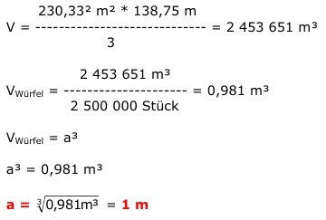

Aufgabe 227 Die quadratische Cheops Pyramide ist 138,75 m hoch und hat eine Grundseite von 230,33 m. Welche Seitenlänge a müsste ein Steinwürfel haben, wenn sie aus 2 500 000 solcher Würfel bestehen würde? 